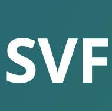
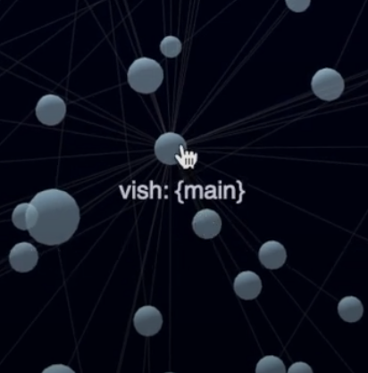
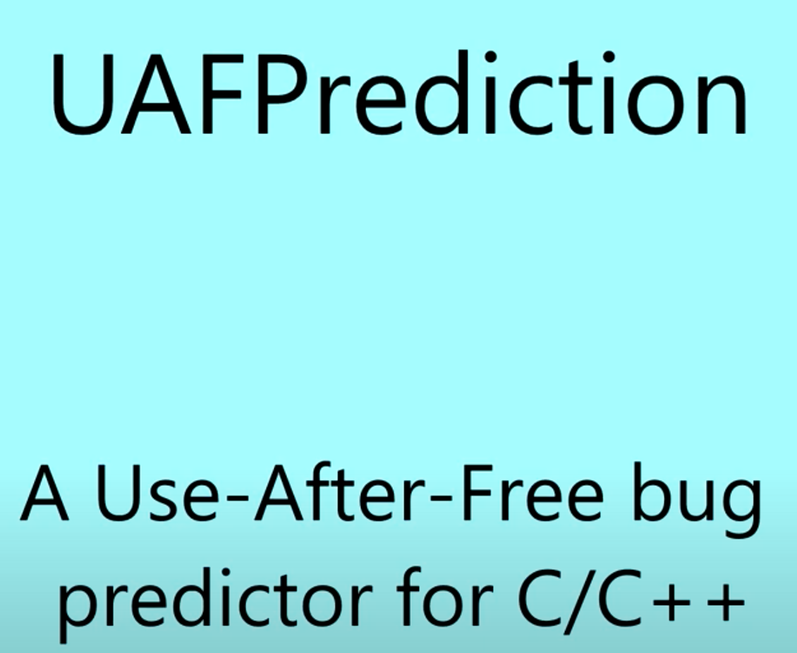
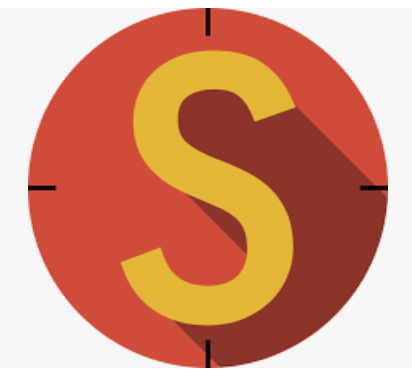
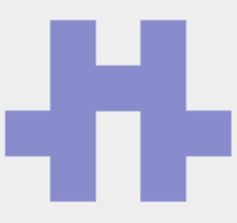

Honour Projects

An online learning and teaching platform for source code analysis based on SVF.
WebSVF Code Repository

Analyzing and visiualizing source code.
Web Code Map - Gurparteek Singh
An eclipse plugin for examining use-after-free bugs reported by SVF.
SVF-EclipsePlugin Code Repository

A tool uses SVM machine learning model to determine the likelihood of a use-after-free bug within C/C++ source files.
UAFPrediction Code Repository
An eclipse plugin of Data Race Detection reported by SVF.
SVF-MTA-EclipsePlugin Code Repository

A test case mutator for validating a pointer analyzer.
Test-Case-Mutation Code Repository

Machine-learning-based prediction of FlowDroid options for analyzing an Android App.
Flow-Droid-Run-Tool Code Repository